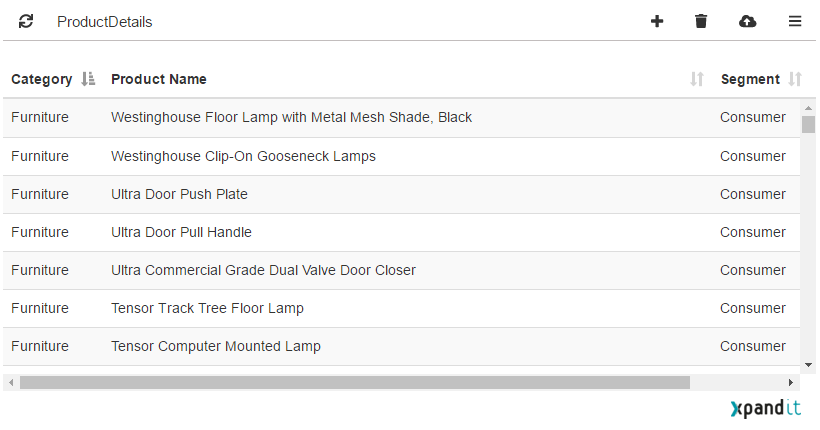
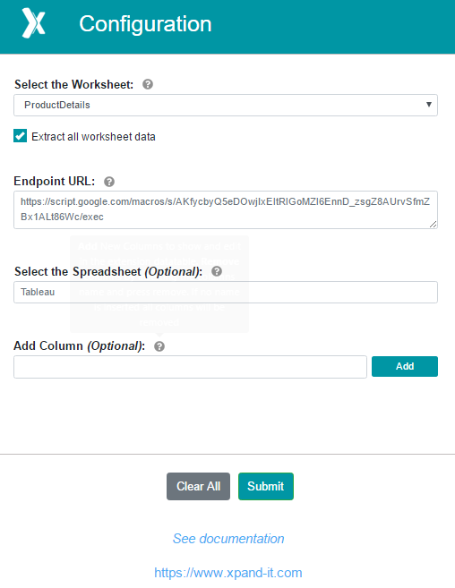

Extension features
Main Page
| Option | Description |
|---|---|
|
Open de options sidebar |
|
|
Upload the data to the defined endpoint URL |
|
|
Remove the selected rows in the data table If no rows are selected all the data is removed |
|
|
Edit the selected row in the datatable |
|
|
Insert new rows in the datatable |
|
|
Only available when working with worksheet full data extract (selected on configuration) This allows the refresh of the extract. When using the complete extract the table data will only update when refreshed |
Configuration

| Option | Description |
|---|---|
| Select the Worksheet | Select the woksheet, in the dashboard, you want to use to extract data. |
| Extract all worksheet data | If selected, it will extract all the data in the worksheet instead of only loading the selected marks. |
| Endpoint URL | URL to the endpoint you want the extension to send data. |
| Select the Spreadsheet | If using the Google Spreadsheet provided, this will set the sheet name where to store de data. The default value is Tableau. |
| Add Column | Add new columns that will be visible in the datatable, to be able to add new information to you data; After writting the column name, click in the Add button. To remove a column, click the Remove button. |
| Submit | This button saves the configuration. |
| Clear All | This button removes all the columns, sets the Google spreadsheet to the default value and removes the endpoint URL; |